System architecture
BackendNine independently deployable Spring Boot services on Java 21, one apiece per capability — identity, chat, rooms, workspaces, tasks, calendar, notifications, plus the AI assistant and the 2D-office server. No shared schema. No service holds a session; identity arrives as a trusted header the gateway injects on every request. Services talk to each other two ways: asynchronously through RabbitMQ when nothing needs to wait for an answer, synchronously through a locked-down internal API when one does.

Services and ports
| Service | Port | Datastore | Owns |
|---|---|---|---|
| gateway-api | 8080 | — | Routing, JWT validation, identity-header injection, CORS, blocks /api/internal/** at the edge. |
| user-service | 8091 | MySQL | Register/login, JWT issuance, profile, OTP + password reset. |
| workspace-service | 8087 | PostgreSQL public | Workspaces, desks, teams, the 2D layout, invitations, presence. |
| chat-service | 8084 | MongoDB + Redis | Channels, DMs, threads, reactions, pins, attachments, @mentions. |
| tasks-service | 8085 | PostgreSQL tasks | Team Spaces and the tasks that live in them, due-soon reminders. |
| calendar-service | 8083 | PostgreSQL calendar | The shared team calendar, meeting reminders, auto-status. |
| room-service | 8086 | MongoDB + Redis | Voice/video rooms, presence, Agora tokens, proximity grouping. |
| notifications-service | 8082 | MongoDB + Redis | Consumes events, sends email, pushes in-app notifications live. |
| ai-service | 8089 | — (stateless) | Function-calling assistant; re-enters the platform on the caller's own token. |
One instance, three schemas
Calendar, tasks and workspace each get their own PostgreSQL schema rather than their own instance — calendar, tasks and public, each with an independent Flyway migration history. It's database-per-service in the way that matters (no service reads another's tables), running on hardware that doesn't need three Postgres containers to prove it.
Deployment
One parameterized Dockerfile builds any service — --build-arg SERVICE=chat-service produces a slim eclipse-temurin:21-jre image via a Maven multi-stage build. A single Docker Compose file wires all of it together: nine Spring services, MySQL, PostgreSQL, MongoDB, Redis, RabbitMQ, Loki/Promtail/Grafana/Prometheus, and both frontends — docker compose up is the entire deployment.
Real-time, two different ways
Chat, rooms and notifications run over STOMP-over-WebSocket — ordered, durable, stored. The 2D office runs on Colyseus, a separate real-time system built for high-frequency position updates that are never worth persisting. Different traffic, different guarantees, so it's two systems instead of one system straining to be both.
The 2D office is a backend client, not a bolt-on
The browser client authenticates with the same JWT as the rest of the app, calls the gateway for workspace layout and desk data, and opens a STOMP connection directly to room-service for proximity voice. The Colyseus server verifies that JWT independently, then calls workspace-service's internal API to validate joins and persist presence. Identity, membership, presence, chat and voice for the office all run through the same backend as the web app — it was previously a standalone prototype; it isn't one now.
Asynchronous integration: two consumers, everyone else produces
Nothing that can wait blocks a request. Five services publish notification events into one exchange; workspace and room publish channel-lifecycle events into their own. Only two services consume — notifications and chat — and every event carries a unique id so a redelivery never double-fires.
